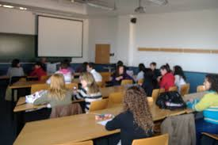
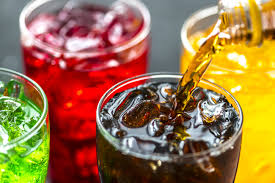
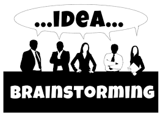
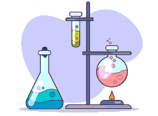
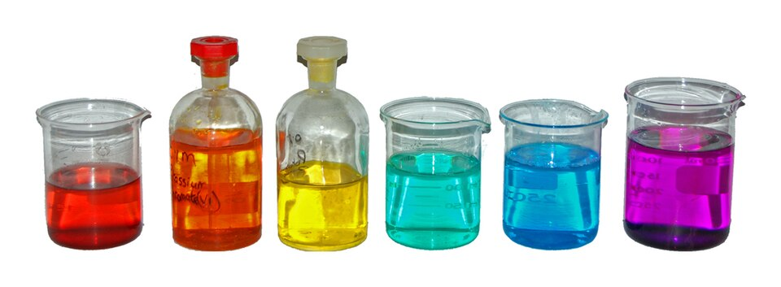
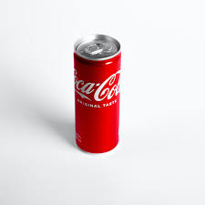
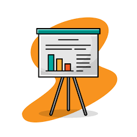

Introducción: ¿Qué estamos bebiendo? Mezclas y disoluciones
A lo largo de las próximas sesiones vamos a convertirnos en científicos y científicas para investigar algo que vemos todos los días: las mezclas y las disoluciones.
Aunque no siempre nos damos cuenta, convivimos constantemente con ellas: refrescos, zumos, agua con sal, medicamentos, productos de limpieza… Pero, ¿son todas iguales? ¿Cómo podemos diferenciarlas? ¿Se pueden separar? ¿Cómo sabemos cuánto soluto contiene una bebida?
Durante esta situación de aprendizaje aprenderemos a observar, experimentar y analizar diferentes sustancias para comprender mejor cómo está formada la materia.
¿Qué vamos a hacer?
Trabajaremos de forma individual, en parejas y en grupo realizando actividades prácticas, experimentos y pequeños retos científicos.
Estas serán las actividades principales de cada sesión:
- Sesión 1: ¿Qué estamos bebiendo?
- Observaremos distintas bebidas y trataremos de descubrir si son iguales o diferentes.
- Compartiremos nuestras primeras ideas sobre mezclas y disoluciones.
- Sesión 2: ¿Qué sabemos ya?
- Haremos una lluvia de ideas para recordar lo que sabemos sobre sustancias puras, mezclas y disoluciones. Después intentaremos clasificarlas.
- Sesión 3: Experimentamos en el laboratorio
- Realizaremos prácticas de laboratorio preparando mezclas y probando métodos para separarlas, como la filtración y la decantación.
- Sesión 4: Calculamos concentraciones
- Aprenderemos a preparar una disolución con una concentración determinada utilizando gramos por litro (g/L).
- Sesión 5: Organizamos lo aprendido
- Explicaremos y comprenderemos cómo se comportan las partículas de la materia y estudiaremos los diferentes tipos de mezclas y disoluciones.
- Sesión 6: Analizamos una bebida real
- Investigaremos etiquetas de bebidas comerciales para descubrir sus componentes y analizar qué tipo de mezcla contienen.
- Sesión 7: Creamos nuestro producto final
- En grupos elaboraréis un producto para explicar una disolución cotidiana de forma clara y creativa.
- Sesión 8: Presentamos y evaluamos
- Expondremos los trabajos al resto de la clase y realizaremos actividades de autoevaluación y coevaluación.

Producto final
Al terminar esta situación de aprendizaje, cada grupo elaborará un producto final en uno de estos formatos:
- Vídeo
- Infografía
- Presentación digital
En vuestro trabajo tendréis que explicar una disolución cotidiana (por ejemplo: un refresco, agua con sal, un zumo, un medicamento disuelto, etc.).
El producto deberá incluir:
✅ Qué tipo de mezcla es
✅ Cuál es el soluto y el disolvente
✅ Cómo es su concentración
✅ Explicación científica utilizando vocabulario adecuado
✅ Imágenes, ejemplos o experimentos que ayuden a entenderlo
Además, deberéis presentarlo oralmente al resto de la clase.
¿Qué aprenderemos?
Con esta situación de aprendizaje aprenderás a:
- Diferenciar sustancias puras y mezclas
- Reconocer mezclas homogéneas y heterogéneas
- Comprender qué es una disolución
- Calcular concentraciones sencillas
- Utilizar materiales de laboratorio correctamente
- Trabajar en equipo
- Explicar información científica de forma clara
¡Prepárate para investigar, experimentar y descubrir la ciencia que se esconde en cosas tan cotidianas como una bebida!
Sesión 1: ¿Qué estamos bebiendo? (Motivación)
Hoy vamos a empezar observando algo muy cotidiano: diferentes bebidas.
En grupos, vais a analizar varios ejemplos (refresco, zumo con pulpa y agua con sal). Observad su aspecto, color y si parecen homogéneas o no.
Después, responded a la pregunta clave:
👉 ¿Son todas estas bebidas iguales? ¿Por qué?
Anotad vuestras ideas y preparad una breve explicación para compartir con la clase.

Sesión 2: ¿Qué sabemos ya? (Activación de ideas previas)
Antes de avanzar, vamos a pensar qué sabemos sobre las mezclas.
Realizaremos una lluvia de ideas en la que responderéis a estas preguntas:
- ¿Qué es una mezcla?
- ¿Qué es una sustancia pura?
- ¿Qué tipos de mezclas conocéis?
Después, intentaréis clasificar ejemplos que os dará la profesora en:
- Sustancias puras
- Mezclas
- Disoluciones
No pasa nada si no está perfecto: lo importante es ver qué ideas tenemos al empezar.

Sesión 3: Experimentamos en el laboratorio (Explorar)
Hoy toca trabajar como científicos.
En el laboratorio vais a:
- Preparar diferentes mezclas (agua con sal, agua con arena, etc.)
- Observar si las sustancias se disuelven o no (solubilidad)
- Probar métodos para separar mezclas:
👉 Anotad todo lo que observéis: qué ocurre, qué cambia y qué no.

Sesión 4: ¿Cuánta sustancia hay? (Cálculo de concentración)
Vamos a aprender a medir cuánto soluto hay en una disolución.
Trabajaréis con la concentración en gramos por litro (g/L).
Tarea:
👉 Preparar una disolución con una concentración determinada (por ejemplo, 10 g/L).
Tendréis que:
- Calcular la cantidad de soluto necesaria
- Medir correctamente
- Preparar la disolución

Sesión 5: Construimos el conocimiento (Estructurar)
Ahora vamos a organizar todo lo aprendido.
El profesor/a explicará:
- La teoría cinético-molecular (cómo se comportan las partículas)
- Diferencia entre sustancias puras y mezclas
- Tipos de mezclas (homogéneas y heterogéneas)
- Qué es una disolución
- Qué significa la concentración
👉 Tomad apuntes y preguntad cualquier duda.
Sesión 6: Analizamos una bebida real (Aplicar)
Vamos a aplicar lo aprendido a un caso real.
Cada grupo analizará la etiqueta de una bebida comercial.
Tendréis que identificar:
- Sus componentes
- Si es una mezcla o disolución
- Qué tipo de mezcla es
- Estimar su concentración (cuando sea posible)
👉 Preparad una breve explicación con vuestras conclusiones.

Sesión 7: Creamos nuestro producto final (Aplicar)
Es vuestro turno para explicar lo aprendido.
En grupos, elegiréis una disolución cotidiana (por ejemplo: refresco, suero, agua con sal…).
Deberéis crear uno de estos formatos:
- Vídeo
- Infografía
- Presentación
Debe incluir:
- Qué es la disolución
- Sus componentes
- Tipo de mezcla
- Ejemplo de concentración
👉 Sed creativos, pero también claros y científicos.

Sesión 8: Compartimos y evaluamos (Concluir y evaluar)
Hoy presentaréis vuestros trabajos al resto de la clase.
Después de cada exposición:
- Los compañeros harán una coevaluación
- Cada grupo realizará una autoevaluación
Reflexionaremos juntos sobre:
👉 ¿Qué hemos aprendido?
👉 ¿Qué nos ha resultado más difícil?
{kind=link}
{kind=link}